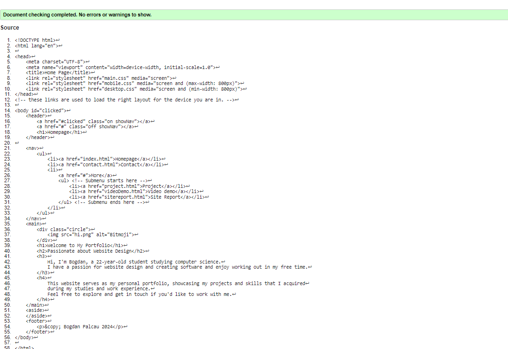
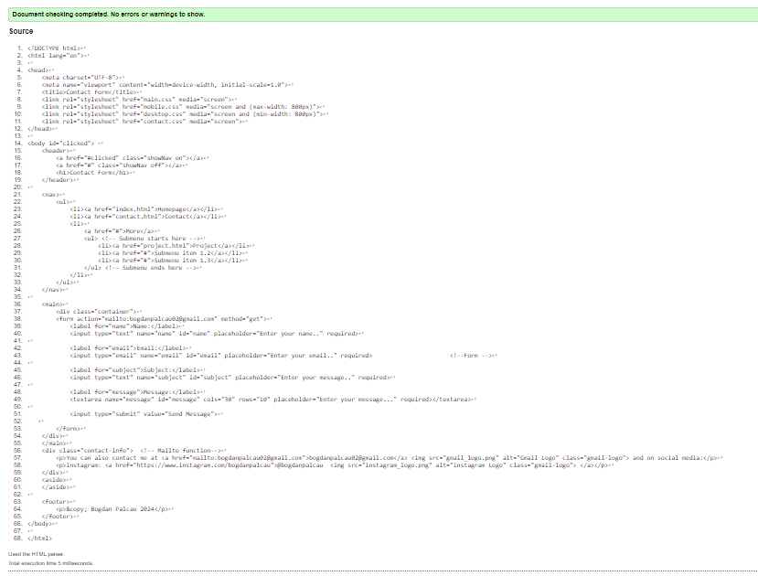
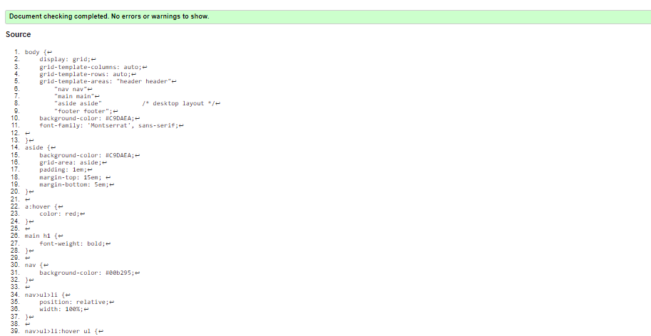
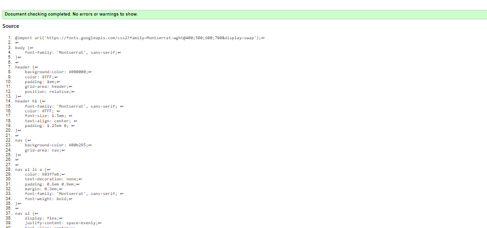
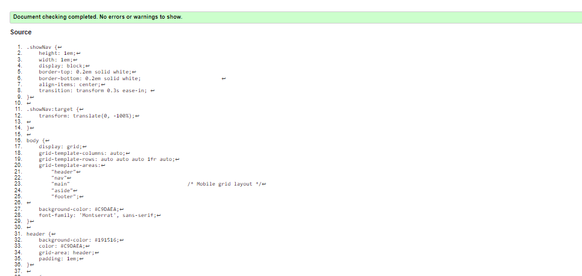
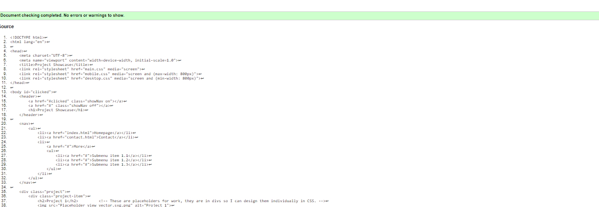
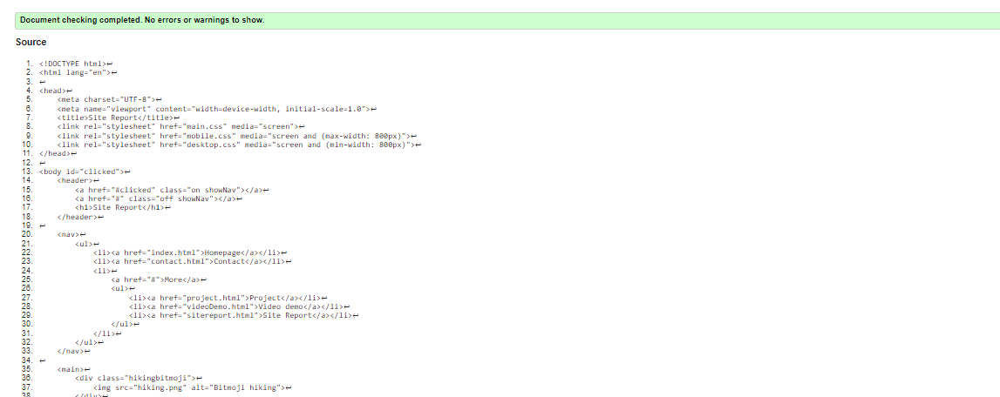

Site Report
Learning web development has proven fun and challanging, I have experienced moments of frustration and joy when I was successful the formatiing has proven quite a hard challange for me and optimizing for both mobile and desktop can be a challanging task, but after a while I have gained more confidence in using HTML and CSS and these errors slowly began to fade away. Looking back at my experience developing a website, the experience made me improve my skills in website development and in the future I beilive I can do better as I learnt from my mistakes. My website has evolved significantly since the beginning I started with creating links to adding more complex functions such as forms and mobile optimization. I have developed the website in such a way in which it can be minimalistic and look profesional, I have used green/black colour palette throught the website as I felt that would provide a more professional look. I also took inspiration from existing websites on the web and I have carefully studied their design choices. I have inspired myself from websites created by other people. I think I could have managed my time better on this project but due to constraints I have not been able to do that, I hope in the future I can manage my time in a better way so I can deal with any unexcepted errors. Looking at future projects, I am more confident about my website development skills and I look forward to expanding my skills even further!
contact.css
contact.html
desktop.css
index.html

main.css
mobile.css
project.html
sitereport.html
